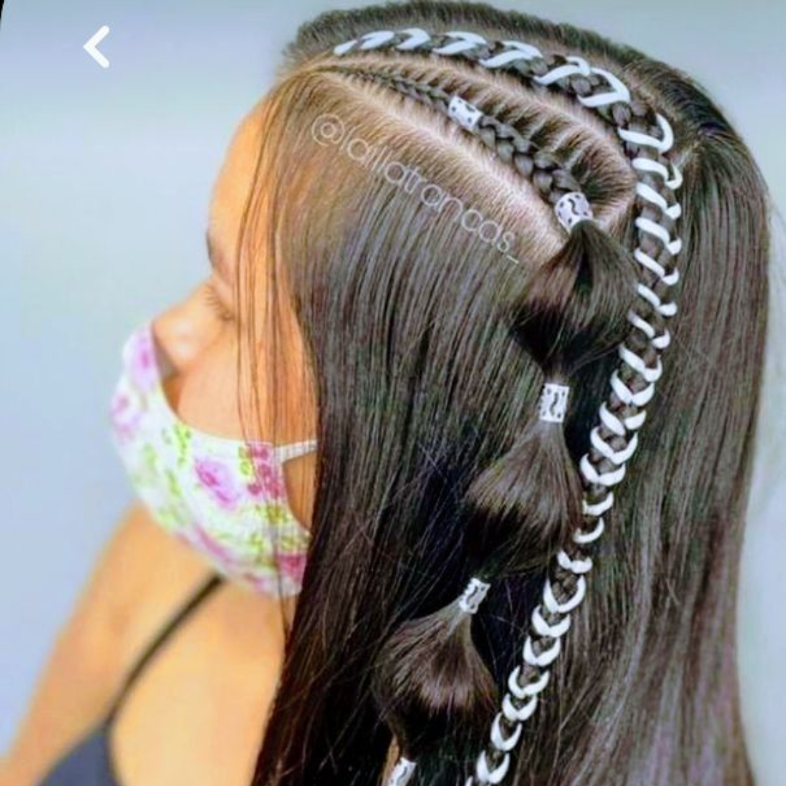
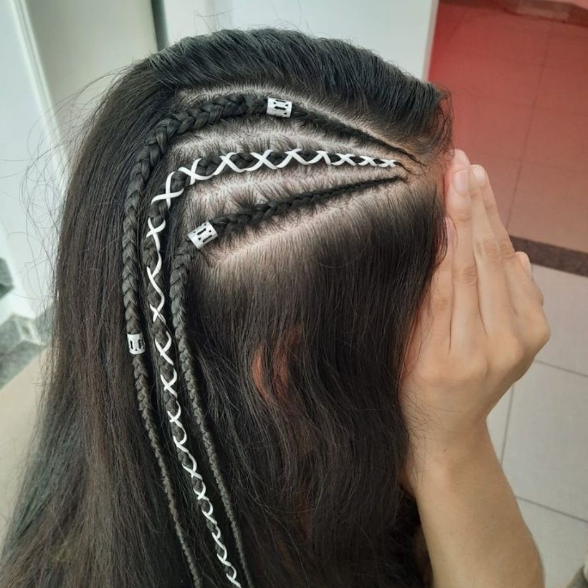
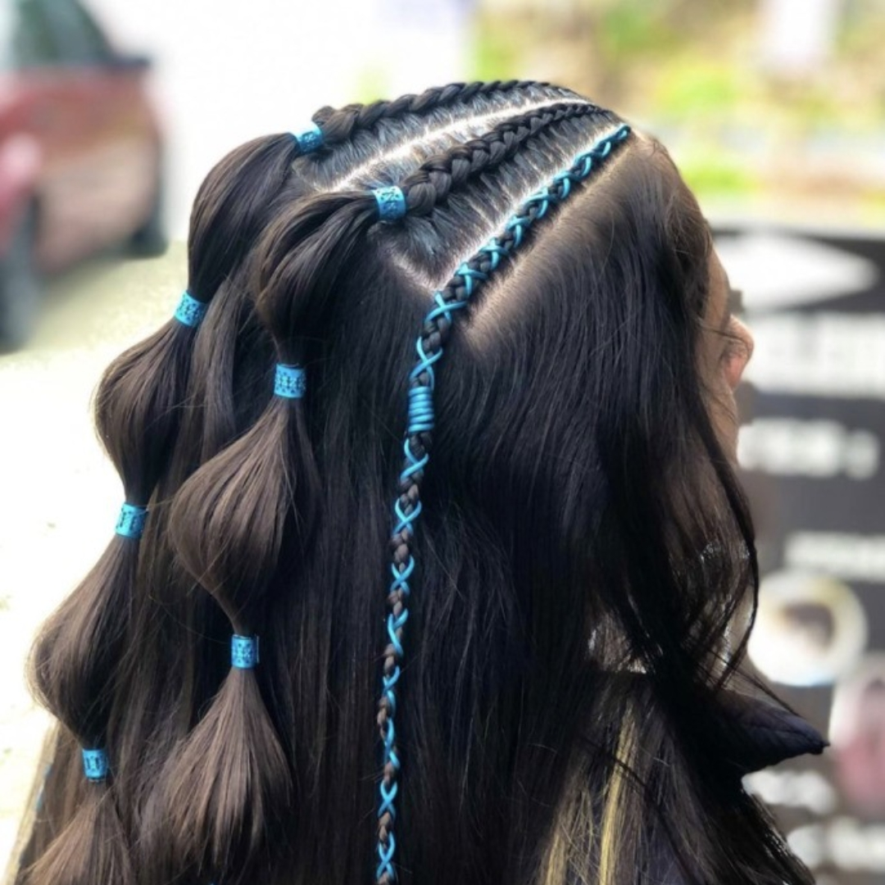

Com 24 anos, sou formada em Estética pela UNIP e possuo certificações em tranças, cabelos e cachos pela FGV. Atuo como trancista em meu estúdio na cidade de Santos, onde ofereço serviços personalizados que valorizam a beleza única de cada cliente.
Minha abordagem é pautada pela combinação de criatividade, alta performance e delicadeza, com o objetivo de realçar a autoestima e promover a saúde capilar. Meu trabalho vai além de transformar visualmente, busco proporcionar uma experiência que eleve a confiança e o bem-estar de quem me procura.
Meu trabalho é marcado por um cuidado excepcional com cada cliente, proporcionando um ambiente acolhedor e confortável. Combinando técnicas especializadas e sensibilidade, me dedico a garantir que o processo seja sempre agradável e respeite as necessidades e preferências de cada pessoa. A delicadeza é fundamental em cada detalhe, desde o tratamento capilar até a execução de cada estilo.
Acredito que a base de um bom atendimento está na educação e no respeito mútuo. Em meu estúdio, trato cada cliente com empatia, oferecendo orientação sobre os melhores cuidados para seus cabelos e respeitando suas escolhas. A comunicação clara e respeitosa é sempre prioridade, para que o cliente se sinta seguro e bem-informado durante toda a experiência.
Com certificações e experiência especializada, sou uma trancista qualificada, com amplo conhecimento em diversos estilos de tranças, desde as mais tradicionais até as mais modernas. Cada trança é feita com precisão e técnica, considerando as características do cabelo e o estilo desejado. Meu objetivo é criar penteados que não só realcem a beleza, mas também promovam o conforto e a durabilidade, atendendo às necessidades de cada cliente de forma única.
"
Adorei o trabalho da Joana! Ela é extremamente profissional e atenciosa. As tranças ficaram impecáveis e o cuidado dela com o meu cabelo foi incrível. Saí do estúdio me sentindo linda e confiante. Com certeza voltarei para fazer mais penteados!
★★★★★
Paula
"
A Joana é uma verdadeira artista! Além de fazer tranças perfeitas, ela também me deu várias dicas de como cuidar melhor do meu cabelo. É nítido o quanto ela ama o que faz e como isso reflete no resultado. Super recomendo o trabalho dela!
★★★★★
Maria
"
Já passei por várias profissionais, mas a Joana se destaca pela dedicação e carinho com os clientes. Minhas tranças ficaram maravilhosas e duraram muito tempo. O ambiente do estúdio também é super acolhedor. Foi uma experiência incrível!
★★★★★
Elisangela
Rua Lourenço Batista de Araújo, 215, Jardim Nova República, Cubatão - SP